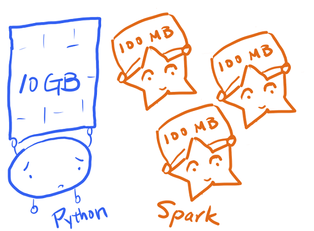

When your Docker Meets Pyspark to Do Sentiment Analysis of 10+ GB Customer Review Data-PART 1
Docker+SQL+Apache Spark+Pandas

In this blog I going to show you how you could easily use the Pyspark to wrangle the gigabyte scale data set. OK, so let’s get started:
from IPython.core.display import Image
Image('start.jpeg', width=1000, height=1000)

Setting up the Docker Engine
Now, here the docker will be used to easily download the jupyter/pyspark docker image and then use it for distributed processing. So, the first thing you must know is whether your OS has a Docker engine.
The Linux user will not have trouble with this one and they can simply follow the instruction to set-up the docker in their OS from the link:
Docker Manual for Linux Users:
For Windows and Mac user you can follow the official link to set-up your docker engine:
Note: if you are a Data Scientist/ Analyst reading this post, I highly recommend you to work with Linux OS distribution since it will really help you especially when it comes putting the Data Science results to the production:
Now, having the Docker engine, the next thing we must do is to get the pyspark image (if you do not have it). This can be easily done through the following command in your bash:
docker pull jupyter/pyspark-notebook
It is a bit a large file (around 4.5GB), after pulling we need to double check we have image using the command line:
(base) peyman@peyman-ZenBook-UX433FN-UX433FN:~/superpack/pyspark_docker$ sudo docker image ls
Here is the list of all images in our local machine, we can see that the jupyter/pyspark-notebook is among the images that we will utilize it:
(base) peyman@peyman-ZenBook-UX433FN-UX433FN:~/superpack/pyspark_docker$ sudo docker image ls --all
REPOSITORY TAG IMAGE ID CREATED SIZE
jupyter/pyspark-notebook latest 5019fd934efa 2 weeks ago 4.4GB
jupyter/minimal-notebook latest bd466ef7da5f 2 weeks ago 2.52GB
Now, if you have the jupyter/pyspark-notebook on your list, GREAT!.
from IPython.core.display import Image
Image('success.jpg', width=1000, height=1000)

Port local Directory to the Docker Container
Now you have a image of spark to wrangle the big data.So now since most of the time our big data is not in the same directory the docker is, we need to port the big data set to the container, so the container have direct access to the data, in my case the following code make this mounting (I will break it in the follow):
(base) peyman@peyman-ZenBook-UX433FN-UX433FN:~$ sudo docker run -p 8888:8888 -v ~/superpack/pyspark_docker:/home/jovyan jupyter/pyspark-notebook
OK, let’s break the above code to fully understand it:
(base) peyman@peyman-ZenBook-UX433FN-UX433FN:~$ sudo docker run -p 8888:8888
So this one pass traffic from port 8888 on our machine into port 8888 on the Docker image, in this case (jupyter/pyspark-notebook)
-v ~/superpack/pyspark_docker:/home/jovyan jupyter/pyspark-notebook
Here, replace “~/superpack/pyspark_docker” with your local working directory. This directory will be accessed by the container, that’s what option “-v” is doing at the code. The directory might be empty, you will need to put some files later. So if you done the above steps, now the Jupyter notebook should comes up in your browser on the exact path you will have your data. Now, if you have reached this stage, CONGRATULATION, now you are ready to work with the big data:
from IPython.core.display import Image
Image('sweet.jpeg', width=1000, height=1000)

In this work the yelp data set will be used for distributed computing with spark. The Yelp data set available at this link will be used as typical business big data:
Open Source Link for Yelp Dataset
For this particular data, I found this blog quite helpful for data modeling of the data, as could be shown in the below:
from IPython.core.display import Image
Image('yelpdatamodel.png', width=1000, height=1000)
Start Data Wrangling with Spark Session
Set up the Pyspark
import pyspark
from pyspark.sql.types import FloatType
from pyspark.sql.types import StringType
from pyspark.sql import SparkSession
spark = SparkSession \
.builder \
.appName("Big Data Wrangling with Pyspark") \
.config("spark.some.config.option", "some-value") \
.getOrCreate()
Read the Review data through the Spark
df_review = spark.read.json("yelp_academic_dataset_review.json")
Just having look on the size of the data, we have around 80 million review, indeed a big data!:
#Data description
#Checking Attributes and Rows
print('number of rows:'+ str(df_review.count()))
print('number of columns:'+ str(len(df_review.columns)))
number of rows:8021122
number of columns:9
from IPython.core.display import Image
Image('sparkeasy.png', width=1000, height=1000)

df_review.printSchema()
root
|-- business_id: string (nullable = true)
|-- cool: long (nullable = true)
|-- date: string (nullable = true)
|-- funny: long (nullable = true)
|-- review_id: string (nullable = true)
|-- stars: double (nullable = true)
|-- text: string (nullable = true)
|-- useful: long (nullable = true)
|-- user_id: string (nullable = true)
Sentiment Analysis
In the below code, I am defining the text_processing function which will remove the punctuation, make all reviews lower case and remove as well English stop words:
In this step you may need to run the following code to install the NLTK package.
#!pip install NLTK
#!pip install afinn
from sklearn.feature_extraction import stop_words
import string
from nltk.stem import WordNetLemmatizer
lemmatizer = WordNetLemmatizer()
/opt/conda/lib/python3.7/site-packages/sklearn/utils/deprecation.py:144: FutureWarning: The sklearn.feature_extraction.stop_words module is deprecated in version 0.22 and will be removed in version 0.24. The corresponding classes / functions should instead be imported from sklearn.feature_extraction.text. Anything that cannot be imported from sklearn.feature_extraction.text is now part of the private API.
warnings.warn(message, FutureWarning)
from pyspark.sql.functions import udf
def text_processing(text):
# remove punctuation
text = "".join([c for c in text
if c not in string.punctuation])
# lowercase
text = "".join([c.lower() for c in text])
# remove stopwords
text = " ".join([w for w in text.split()
if w not in stop_words.ENGLISH_STOP_WORDS])
# stemming / lematizing (optional)
text = " ".join([lemmatizer.lemmatize(w) for w in text.split()])
return text
text_processing_udf = udf(text_processing, StringType())
Adding the clean_text Column
df = df_review.withColumn("clean_text", text_processing_udf(df_review['text']))
df.select(["clean_text", "text"]).show(5)
+--------------------+--------------------+
| clean_text| text|
+--------------------+--------------------+
|worked museum eag...|As someone who ha...|
|actually horrifie...|I am actually hor...|
|love deagans real...|I love Deagan's. ...|
|dismal lukewarm d...|Dismal, lukewarm,...|
|oh happy day fina...|Oh happy day, fin...|
+--------------------+--------------------+
only showing top 5 rows
OK, now we have the clean text, it is time to do the sentiment analysis to see the score of the each review
import afinn
from afinn import Afinn
afinn = Afinn()
def sentiment(text):
score_sentiment=afinn.score(text)
return score_sentiment
sentiment_processing_udf = udf(sentiment, FloatType())
df_sentiment = df.withColumn("score", sentiment_processing_udf(df['clean_text']))
df_sentiment.select(['score','clean_text']).show(5)
+-----+--------------------+
|score| clean_text|
+-----+--------------------+
| 21.0|worked museum eag...|
|-11.0|actually horrifie...|
| 13.0|love deagans real...|
| -7.0|dismal lukewarm d...|
| 26.0|oh happy day fina...|
+-----+--------------------+
only showing top 5 rows
df_sentiment.printSchema()
root
|-- business_id: string (nullable = true)
|-- cool: long (nullable = true)
|-- date: string (nullable = true)
|-- funny: long (nullable = true)
|-- review_id: string (nullable = true)
|-- stars: double (nullable = true)
|-- text: string (nullable = true)
|-- useful: long (nullable = true)
|-- user_id: string (nullable = true)
|-- clean_text: string (nullable = true)
|-- score: float (nullable = true)
Grouping Business Based on their Review Score
Here, I am grouping the mean score of the all businesses:
df_sentiment_grouped=df_sentiment.select(["business_id",'score']).groupby(['business_id']).mean()
df_sentiment_grouped.printSchema()
root
|-- business_id: string (nullable = true)
|-- avg(score): double (nullable = true)
df_sentiment_grouped.count()
209393
Peyman Kor
M.Sc in Mathematical Modeling and Computation
My research interests include distributed robotics, mobile computing and programmable matter.